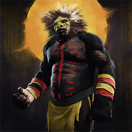
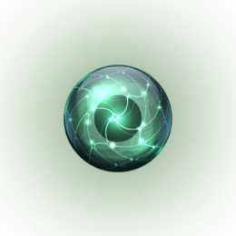
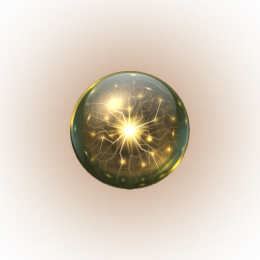
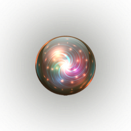

Story
Gyris is a three-part saga. Part 1: The Sound of Trees Standing begins with a Great War between the Minjierri and the creatures that stand against their slaughter. A dark hand is at work. Heroes fall and others forged in pain. The Bura births an unlikely hero. The fungus-cloaked Mara, do the bidding of The Seed Gummuri. The Ochichurri threatens to break the shackles of the dark. All that is known is at stake; and in the unknown lies a truth larger than any could imagine.



